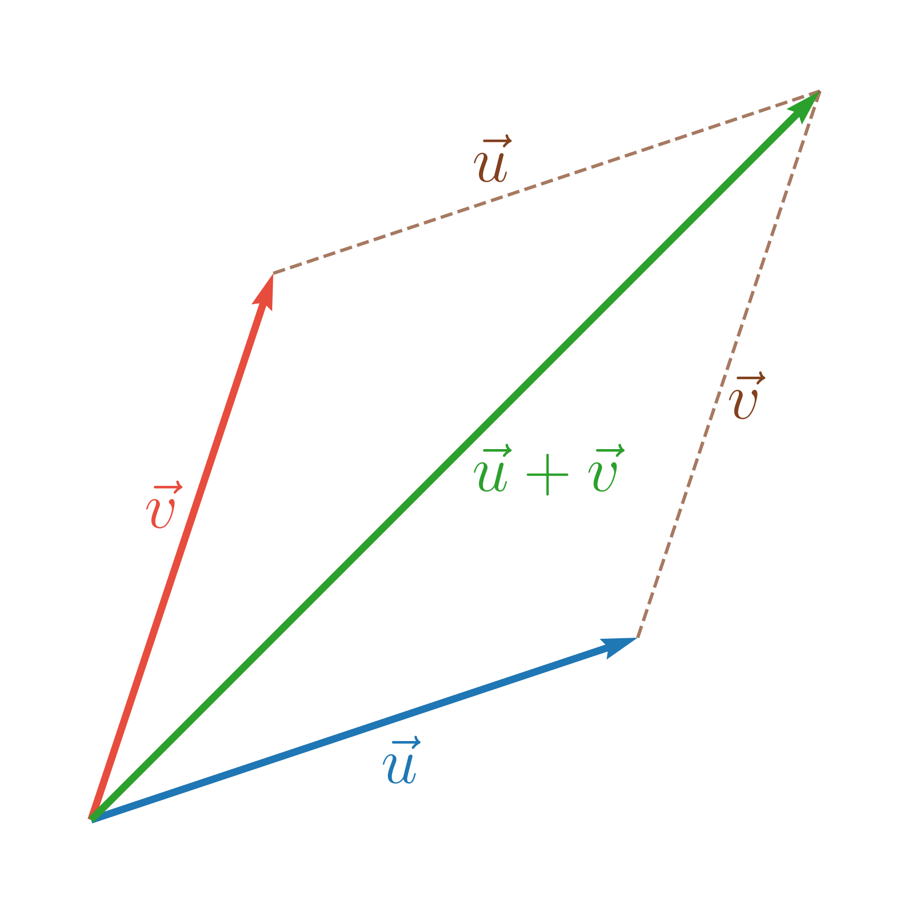
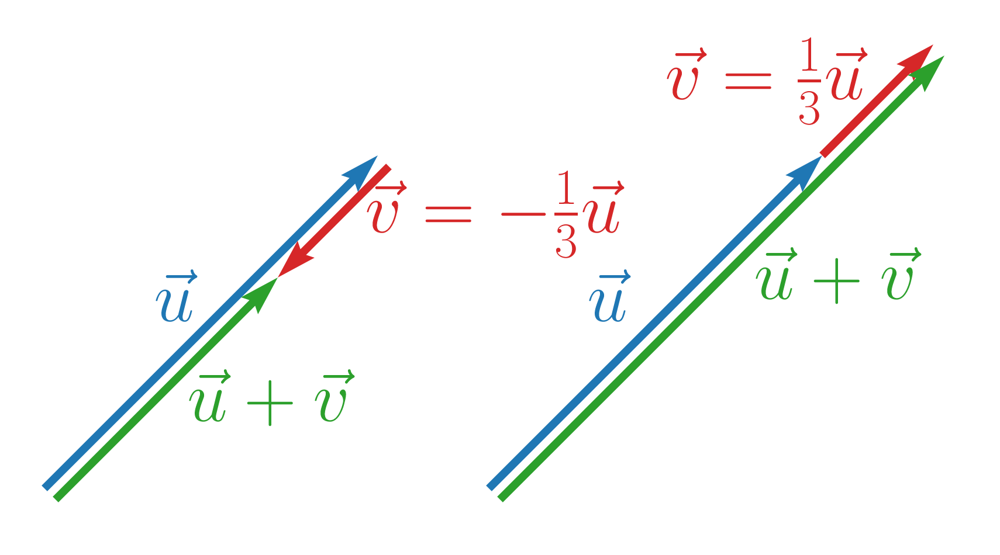
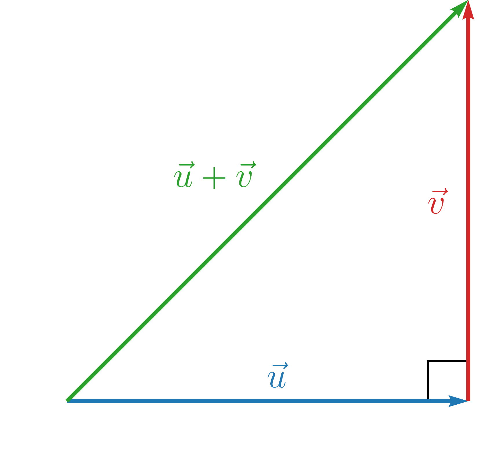
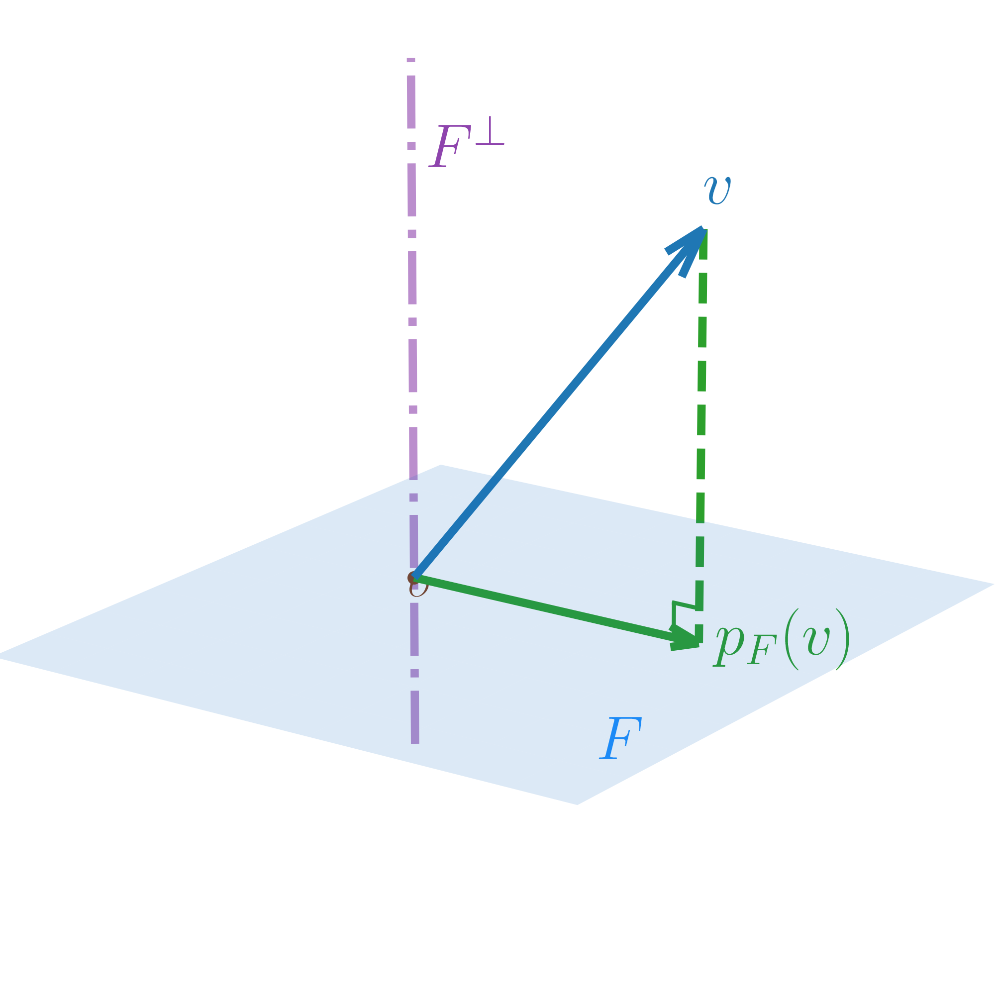
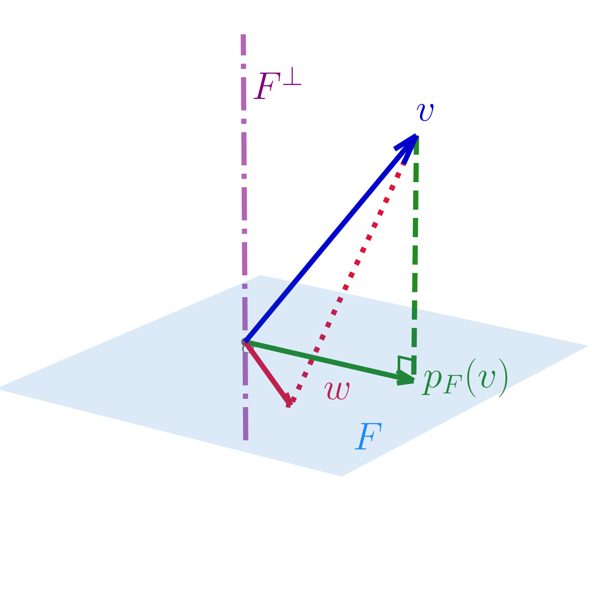
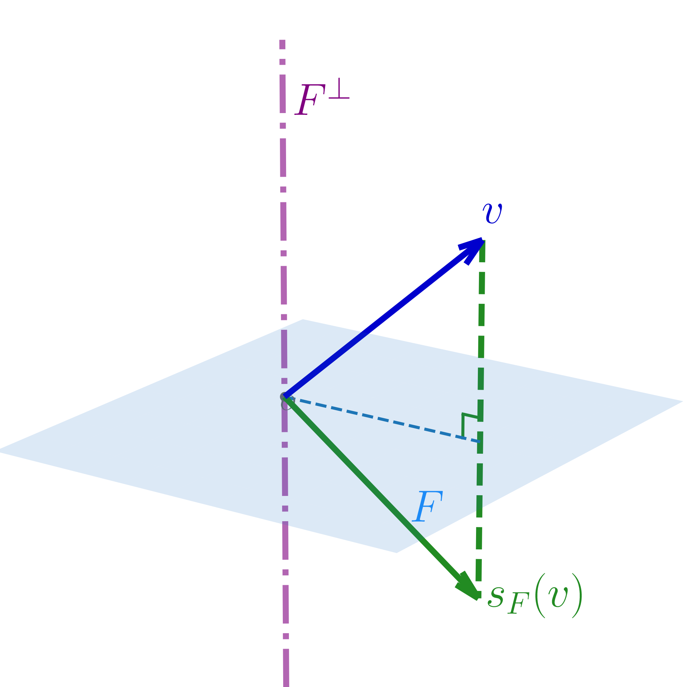
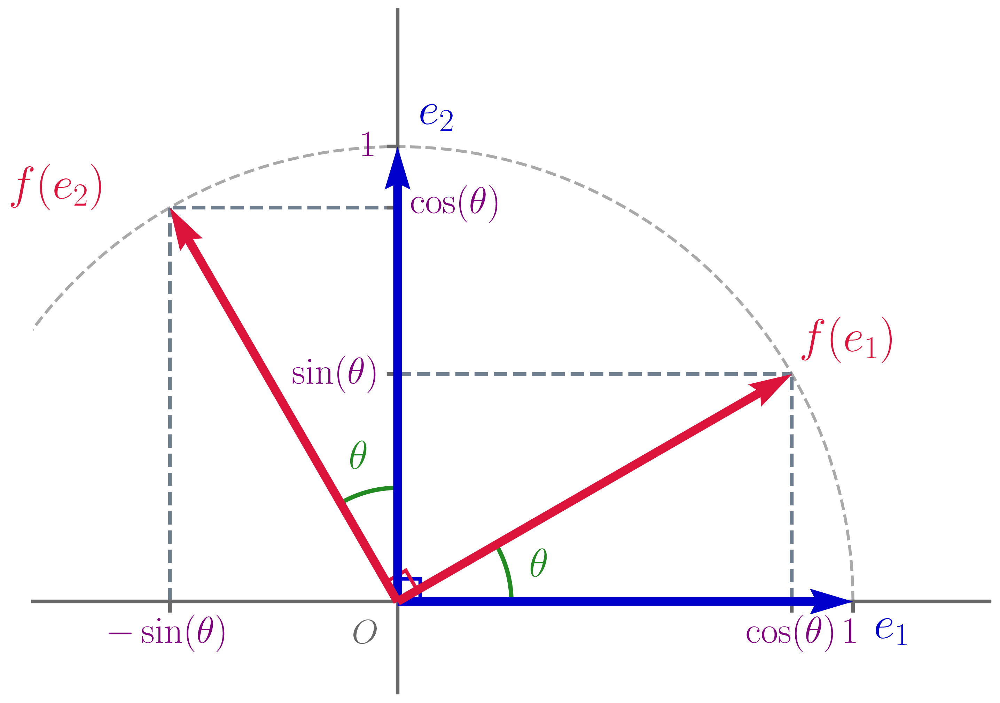
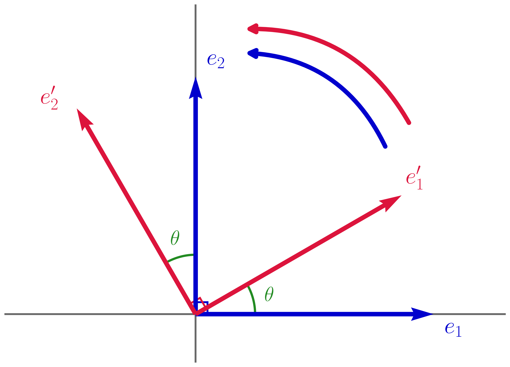
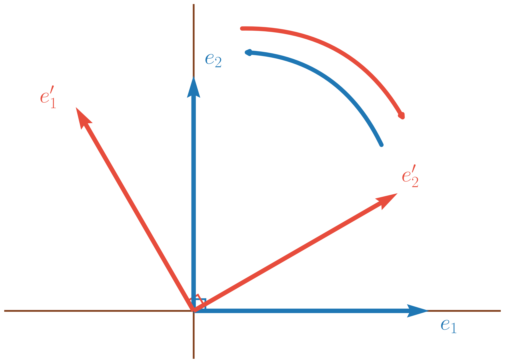

Soit \(E\) un \(\mathbb{R}\)-espace vectoriel et \(\varphi : E\times E \to \mathbb{R}\).
\(\varphi\) est un produit scalaire sur \(E\) si
\(\varphi\) est bilinéaire ie \(\varphi\) est linéaire par rapport à chacune des variables, ou encore pour tout \(u,v \in E\), \(\begin{array}{lllll} \varphi_1 & : & E & \to & \mathbb{R} \\ & & x & \mapsto & \varphi(x,v) \end{array}\) est linéaire (linéarité à gauche) et \(\begin{array}{lllll} \varphi_2 & : & E & \to & \mathbb{R} \\ & & y & \mapsto & \varphi(u,y) \end{array}\) est linéaire (linéarité à droite).
\(\varphi\) est symétrique ie pour tout \(u,v \in E\), \(\varphi(u,v) = \varphi(v,u)\)
\(\varphi\) est définie positive ie pour tout \(v \in E\), \(\varphi(v,v) \geq 0\) et \(\varphi(v,v) = 0 \iff v = 0_E\).
\(\varphi(u,v)\) est alors généralement noté \(\langle u,v \rangle\), \(\left(u \mid v\right)\) ou \(\left[u,v\right]\).
Si \(\varphi\) est symétrique et linéaire à gauche alors \(\varphi\) est linéaire à droite (donc bilinéaire).
En effet, pour \(u,v_1,v_2 \in E\) et \(\lambda \in \mathbb{R}\), on a alors \[\begin{aligned} \varphi(u,v_1+\lambda v_2) & = \varphi(v_1+\lambda v_2,u) \text{ par symétrie} \\ & = \varphi(v_1,u) + \lambda \varphi(v_2,u) \text{ par linéarité à gauche} \\ & = \varphi(u,v_2) + \lambda \varphi(u,v_2) \text{ par symétrie}. \end{aligned}\]
\(\begin{array}{lllll} \varphi & : & \mathbb{R}^n \times \mathbb{R}^n & \to & \mathbb{R} \\ & & (x,y) & \mapsto & \sum_{k=1}^n x_k y_k \text{ avec }\substack{x = (x_1,\ldots,x_n) \\ y=(y_1,\ldots,y_n)} \end{array}\) est un produit scalaire sur \(\mathbb{R}^n\), appelé le produit scalaire usuel de \(\mathbb{R}^n\).
\(\varphi\) est linéaire à gauche.
En effet, soient \(x = (x_1,\ldots,x_n) \in \mathbb{R}^n\), \(y=(y_1,\ldots,y_n) \in \mathbb{R}^n\), \(z=(z_1,\ldots,z_n) \in \mathbb{R}^n\) ainsi que \(\lambda \in \mathbb{R}\) alors \(x+\lambda z = (x_1+\lambda z_1,\ldots,x_n+\lambda z_n)\) et
\[\varphi(x+\lambda z,y) = \sum_{k=1}^n (x_k + \lambda z_k)y_k = \sum_{k=1}^n x_ky_k+\lambda \sum_{k=1}^n z_ky_k = \varphi(x,y) + \lambda \varphi(z,y).\]
\(\varphi\) est symétrique.
En effet, soient \(x = (x_1,\ldots,x_n) \in \mathbb{R}^n\) et \(y=(y_1,\ldots,y_n) \in \mathbb{R}^n\),
\[\varphi(x,y) = \sum_{k=1}^n x_k y_k = \sum_{k=1}^n y_k x_k = \varphi(y,x).\]
\(\varphi\) est définie positive.
En effet, soit \(x = (x_1,\ldots,x_n) \in \mathbb{R}^n\), \(\varphi(x,x) = \sum_{k=1}^n x_k^2 \geq 0\).
De plus, \(\varphi(x,x) = 0 \iff \sum_{k=1}^n \underbrace{x_k^2}_{\geq 0} = 0 \iff \forall k \in [\![ 1,n ]\!], x_k = 0 \iff x = 0_{\mathbb{R}^n}.\)
\(\begin{array}{lllll} \varphi & : & \mathscr{C}([a,b],\mathbb{R}) \times \mathscr{C}([a,b],\mathbb{R}) & \to & \mathbb{R} \\ & & (f,g) & \mapsto & \int_a^b fg \end{array}\) est un produit scalaire sur \(\mathscr{C}([a,b],\mathbb{R})\).
\(\varphi\) est linéaire à gauche.
En effet, soient \(f,g,h \in \mathscr{C}([a,b],\mathbb{R})\) et \(\lambda \in \mathbb{R}\), par linéarité de l’intégrale on a \[\varphi(f+\lambda g,h) = \int_a^b (f+\lambda g)h = \int_a^b fh+\lambda \int_a^b gh = \varphi(f,h) + \lambda \varphi(g,h).\]
\(\varphi\) est symétrique.
En effet, soient \(f,g \in \mathscr{C}([a,b],\mathbb{R})\), \[\varphi(f,g) = \int_a^b fg= \int_a^b gf = \varphi(g,f).\]
\(\varphi\) est définie positive.
En effet, soit \(f \in \mathscr{C}([a,b],\mathbb{R})\), \(\varphi(f,f) = \int_a^b \underbrace{f^2}_{\geq 0} \geq 0\) et \(\int_a^b \underbrace{f^2}_{\geq 0} = 0 \iff f = 0\) car \(f\) est continue.
En revanche, \(\varphi\) n’est pas un produit scalaire sur \(\mathscr{C}_{\mathrm{m}}\left([a,b]\right)\).
En effet, elle n’y est pas définie positive car \(\varphi(f,f) =0\) avec \(\begin{array}{lllll} f & : & [a,b] & \to & \mathbb{R} \\ & & x & \mapsto & \left\{\begin{array}{ll} 0 & \mbox{ si $x \in [a,b[$} \\ 1 & \mbox{ si $x=b$} \end{array}\right. \end{array}\) qui est non nulle.
\(\begin{array}{lllll} \varphi & : & \mathscr{M}_{n}(\mathbb{R}) \times \mathscr{M}_{n}(\mathbb{R}) & \to & \mathbb{R} \\ & & (A,B) & \mapsto & \mathop{\mathrm{Tr}}\left({}^tAB\right) \end{array}\) est un produit scalaire sur \(\mathscr{M}_{n}(\mathbb{R})\).
\(\varphi\) est linéaire à gauche.
En effet, soient \(A,B,C \in \mathscr{M}_{n}(R)\) et \(\lambda \in \mathbb{R}\),
\[\varphi(A+\lambda C,B) = \mathop{\mathrm{Tr}}\left({}^t\left(A+\lambda C\right)B\right) =\mathop{\mathrm{Tr}}\left({}^tA+\lambda {}^tCB\right) = \mathop{\mathrm{Tr}}({}^TAB)+\lambda\mathop{\mathrm{Tr}}({}^tCB) = \varphi(A,B)+\lambda\varphi(C,B).\]
\(\varphi\) est symétrique.
En effet, soient \(A,B \in \mathscr{M}_{n}(\mathbb{R})\),
\[\varphi(A,B) = \mathop{\mathrm{Tr}}\left({}^tAB\right) = \mathop{\mathrm{Tr}}\left({}^t\left({}^tAB\right)\right) = \mathop{\mathrm{Tr}}\left({}^tBA\right) = \varphi(B,A).\]
\(\varphi\) est définie positive.
En effet, pour \(A = \left(a_{ij}\right) \in \mathscr{M}_{n}(\mathbb{R})\) \(^tAA = \left(\sum_{k=1}^n a_{ki}a_{kj}\right)\) donc \[\varphi(A,A) = \sum_{i=1}^n \sum_{k=1}^n a_{ki}a_{ki} = \sum_{1 \leq i,k \leq n} a_{ki}^2.\]
Donc \(\varphi(A,A) \geq 0\)
et \(\varphi(A,A) = 0 \iff \sum_{1 \leq i,k \leq n} \underbrace{a_{ki}^2}_{\geq 0} = 0 \iff \forall 1 \leq i,k \leq n, a_{ki} = 0 \iff A = 0_{\mathscr{M}_{n}(\mathbb{R})}\).
Remarquons que pour \(A = \left(a_{ij}\right),B=\left(b_{ij}\right) \in \mathscr{M}_{n}(\mathbb{R})\), \({}^tAB = \left(\sum_{k=1}^n a_{ki}b_{kj}\right)\).
Donc \(\varphi(A,B) = \mathop{\mathrm{Tr}}\left({}^tAB\right) = \sum_{i=1}^n \sum_{k=1}^n a_{ki}b_{ki} = \sum_{1 \leq i,j \leq n}a_{ij}b_{ij}\) est en fait la somme du produit des coefficients (comme fonctionne le produit scalaire usuel de \(\mathbb{R}^n\)).
\(\begin{array}{lllll} \varphi & : & \mathbb{R}^3 \times \mathbb{R}^3 & \to & \mathbb{R} \\ & & (u,v) & \mapsto & x_1y_1-2x_2y_2+3x_3y_3 \text{ avec }\substack{u = (x_1,x_2,x_3) \\ v=(y_1,y_2,y_3)} \end{array}\) n’est pas un produit scalaire.
En effet, par exemple avec \(v_0 = (0,1,0)\), \(\varphi(v_0,v_0) = -2 < 0\).
Soit \((\Omega,\mathbb{P})\) un espace probabilisé. Notons \(\mathscr{E}\) l’ensemble des variables aléatoires de \(\Omega\) dans \(\mathbb{R}\).
Alors, \(\mathscr{E}\) est un espace vectoriel mais \(\begin{array}{lllll} \varphi & : & \mathscr{E}\times \mathscr{E} & \to & \mathbb{R} \\ & & (X,Y) & \mapsto & \mathop{\mathrm{Cov}}(X,Y) \end{array}\) n’est pas un produit scalaire.
\(\varphi\) est linéaire à gauche,
\(\varphi\) est symétrique,
\(\varphi\) est positive car pour \(X \in Ec\), \(\varphi(X,X) = \mathop{\mathrm{Cov}}(X,X) = \mathop{\mathrm{Var}}(X) \geq 0\),
mais \(\varphi\) n’est pas définie positive.
En effet, soit \(X \in \mathscr{E}\), \[\varphi(X,X) = 0 \iff \mathop{\mathrm{Var}}(X) = 0 \iff \mathbb{P}(X=0) = 1 \centernot{\iff} X = 0.\]
Soit \(E\) un \(\mathbb{R}\)-espace vectoriel et \(\left(\cdot \mid \cdot\right)\) un produit scalaire de \(E\).
On définit la norme de \(v \in E\) comme le réel positif \(\sqrt{\left(v\mid v\right)}\). On la note alors \(\left\|v\right\|\).
Pour \(E = \mathbb{R}^n\) et \(\left(\cdot \mid \cdot\right)\) le produit scalaire usuel, pour \(x = (x_1,\ldots,x_n) \in \mathbb{R}^n\), \(\left\|x\right\| = \sqrt{\sum_{k=1}^n x_k^2}.\)
Pour \(E = \mathscr{C}([a,b],\mathbb{R})\) et \(\begin{array}{lllll} \varphi & : & \mathscr{C}([a,b],\mathbb{R}) \times \mathscr{C}([a,b],\mathbb{R}) & \to & \mathbb{R} \\ & & (f,g) & \mapsto & \int_a^b fg \end{array}\), pour \(f \in \mathscr{C}([a,b],\mathbb{R})\), \(\left\|f\right\| = \sqrt{\int_a^b f^2}\).
(Homogénéité de la norme) Soit \(E\) un \(\mathbb{R}\)-espace vectoriel et \(\left(\cdot \mid \cdot\right)\) un produit scalaire de \(E\).
Soient \(u \in E\) et \(\lambda \in \mathbb{R}\) alors \(\left\|\lambda u\right\| = \left|\lambda\right|\left\|u\right\|\).
On a \(\left\|\lambda u\right\|^2 = \left(\lambda u\mid \lambda u\right) = \lambda^2 \left(u\mid u\right) = \lambda^2 \left\|u\right\|^2\) par bilinéarité de \(\left(\cdot \mid \cdot\right)\).
Donc \(\left\|\lambda u\right\| = \sqrt{\underbrace{\left\|\lambda u\right\|}_{\geq 0}{}^2} = \sqrt{\lambda^2 \left\|u\right\|^2} = \sqrt{\lambda^2}\sqrt{\underbrace{\left\|u\right\|}_{\geq 0}{}^2}=\left|\lambda\right|\left\|u\right\|.\)
(Propriété de séparation de la norme) Soit \(E\) un \(\mathbb{R}\)-espace vectoriel et \(\left(\cdot \mid \cdot\right)\) un produit scalaire de \(E\).
Soient \(u \in E\) alors \(\left\| u\right\| = 0 \iff u=0_E\).
\(\left\| u\right\| = \sqrt{\left(u\mid u\right)}\) et \(\left(\cdot \mid \cdot\right)\) est défini positif donc \(\left\| u\right\| = 0 \iff \left(u\mid u\right)=0 \iff u=0_E\).
En particulier, si \(u,v \in E\), on a donc \(u=v \iff \left\|u-v\right\|=0\).
Soit \(E\) un \(\mathbb{R}\)-espace vectoriel et \(\left(\cdot \mid \cdot\right)\) un produit scalaire de \(E\).
Alors, soient \(u,v \in E\),
\[\begin{aligned} \|u+v\|^2 & = \|u\|^2 + \|v\|^2 + 2\left(u\mid v\right)\\ \|u-v\|^2 & = \|u\|^2 + \|v\|^2 - 2\left(u\mid v\right). \end{aligned}\]
\[\begin{aligned} \|u+v\|^2 & = \left(u+v\mid u+v\right) \\ & = \left(u\mid u+v\right)+\left(v\mid u+v\right) \text{ par linéarité à gauche de $\left(\cdot \mid \cdot\right)$}\\ & = \underbrace{\left(u\mid u\right)}_{=\left\|u\right\|^2}+\left(u\mid v\right)+\left(v\mid u\right)+\underbrace{\left(v\mid v\right)}_{=\left\|v\right\|^2} \text{ par linéarité à droite de $\left(\cdot \mid \cdot\right)$}\\ & = \left\|u\right\|^2+\left\|v\right\|^2+2\left(u\mid v\right) \text{ par symétrie de $\left(\cdot \mid \cdot\right)$} \end{aligned}\] et \[\begin{aligned} \|u+v\|^2 & = \|u+(-v)\|^2 \\ & = \left\|u\right\|^2+\left\|-v\right\|^2+2\left(u\mid -v\right) \\ & = \left\|u\right\|^2+\left|-1\right|\left\|v\right\|^2-2\left(u\mid v\right) \substack{\text{ par homogénéité de la norme}\\\text{ et linéarité à droite de $\left(\cdot \mid \cdot\right)$}} \\ & = \|u\|^2 + \|v\|^2 + 2\left(u\mid v\right). \end{aligned}\]
Pour le produit scalaire usuel sur \(\mathbb{R}^n\) avec \(n=1\), on retrouve que pour tout \(a,b \in \mathbb{R}\), \((a+b)^2=a^2+b^2+2ab\) et \((a-b)^2=a^2+b^2-2ab\).
(Identité de polarisation) Soit \(E\) un \(\mathbb{R}\)-espace vectoriel et \(\left(\cdot \mid \cdot\right)\) un produit scalaire de \(E\).
Alors, soient \(u,v \in E\),
\[\left(u\mid v\right) = \frac{1}{4}\left(\left\|u+v\right\|^2-\left\|u-v\right\|^2\right).\]
Par la proposition [prop:dev_norm_au_carre], \[\begin{aligned} \left(u\mid v\right) & = \frac{1}{2}\left(\left\|u+v\right\|^2-\left\|u\right\|^2-\left\|v\right\|^2\right) \\ \text{ et }\left(u\mid v\right) & = \frac{1}{2}\left(-\left\|u-v\right\|^2+\left\|u\right\|^2+\left\|v\right\|^2\right) \end{aligned}\]
Donc \[\begin{aligned} \left(u\mid v\right) & = \frac{1}{2}\left(u\mid v\right) +\frac{1}{2}\left(u\mid v\right)\\ & = \frac{1}{4}\left(\left\|u+v\right\|^2-\left\|u\right\|^2-\left\|v\right\|^2\right)+\frac{1}{4}\left(-\left\|u-v\right\|^2+\left\|u\right\|^2+\left\|v\right\|^2\right)\\ & = \frac{1}{4}\left(\left\|u+v\right\|^2-\left\|u-v\right\|^2\right). \end{aligned}\]
(Inégalité de Cauchy-Schwarz) Soit \(E\) un \(\mathbb{R}\)-espace vectoriel et \(\left(\cdot \mid \cdot\right)\) un produit scalaire de \(E\).
Soient \(u,v \in E\) alors \[\left|\left(u\mid v\right)\right| \leq \left\|u\right\|\left\|v\right\|.\]
Soit \(t \in \mathbb{R}\) alors \(u+tv \in E\).
De plus, \(\left\|u+tv\right\|^2 = \left\|u\right\|^2+t^2\left\|v\right\|^2+2t\left(u\mid v\right)\) et pour \(\left\|u+tv\right\|^2 \geq 0\).
\(t \in \mathbb{R}\mapsto \left\|u\right\|^2+t^2\left\|v\right\|^2+2t\left(u\mid v\right)\) est donc un polynôme toujours positif.
Soit \(\left\|v\right\| = 0\) donc \(v = 0_E\) et \(\left(u\mid v\right) = 0 \leq \left\|u\right\|\left\|v\right\| = 0\).
Soit \(\left\|v\right\| \neq 0\) et dans ce cas, \(t \in \mathbb{R}\mapsto \left\|u\right\|^2+t^2\left\|v\right\|^2+2t\left(u\mid v\right)\) est un polynôme du second degré avec au plus une racine.
Son discriminant est alors négatif, ce qui donne
\(4\left(u\mid v\right)^2-4\left\|u\right\|^2\left\|v\right\|^2 \leq 0 \iff \left(u\mid v\right)^2 \leq \left\|u\right\|^2\left\|v\right\|^2 \iff \left|\left(u\mid v\right)\right| \leq \left\|u\right\|\left\|v\right\|\).
En considérant le produit scalaire sur \(\mathbb{R}^n\), on a pour \(x = (x_1,\ldots,x_n) \in \mathbb{R}^n\) et \(y=(y_1,\ldots,y_n) \in \mathbb{R}^n\), \[\left|\sum_{k=1}^n x_k y_k\right| \leq \sqrt{\sum_{k=1}^n x_k^2}\sqrt{\sum_{k=1}^n y_k^2} \iff \left(\sum_{k=1}^n x_k y_k\right)^2 \leq \left(\sum_{k=1}^n x_k^2\right)\left(\sum_{k=1}^n y_k^2\right)\]
(Cas d’égalité de l’inégalité de Cauchy-Schwarz) Soit \(E\) un \(\mathbb{R}\)-espace vectoriel et \(\left(\cdot \mid \cdot\right)\) un produit scalaire de \(E\).
Soient \(u,v \in E\) alors il y a égalité dans l’inégalité de Cauchy-Schwarz ie \(\left|\left(u\mid v\right)\right| \leq \left\|u\right\|\left\|v\right\|\) si et seulement si \((u,v)\) est liée.
\((\Longleftarrow)\) Si \((u,v)\) est liée, alors
soit \(v=0_E\) et \(\left|\left(u\mid v\right)\right| =\left\|u\right\|\left\|v\right\|=0\),
soit \(v \neq 0_E\) et il existe \(\lambda \in \mathbb{R}\) tel que \(u = \lambda v\).
On a alors \(\left|\left(u\mid v\right)\right| = \left|\left(\lambda v \mid v\right)\right| = \left|\lambda\left(v \mid v\right)\right| = \left|\lambda\right|\left\|v\right\|^2= \left\|\lambda v\right\|\left\|v\right\| =\left\|u\right\|\left\|v\right\|\).
\((\Longrightarrow)\) En cas d’égalité de l’inégalité de Cauchy-Schwarz,
soit \(v=0_E\) et \(\left|\left(u\mid v\right)\right| =\left\|u\right\|\left\|v\right\|=0\),
soit \(v \neq 0_E\) et en reprenant la preuve de l’inégalité de Cauchy-Schwarz, le polynôme \(t \in \mathbb{R}\mapsto \left\|u+tv\right\|^2= \left\|u\right\|^2+t^2\left\|v\right\|^2+2t\left(u\mid v\right)\) du second degré admet le discriminant \(4\left(u\mid v\right)^2-4\left\|u\right\|^2\left\|v\right\|^2 =0\).
Il admet donc une racine \(t_0 \in \mathbb{R}\) et \(\left\|u+t_0v\right\|^2 = 0\). On a donc \(u+t_0v = 0_E \iff u=-t_0v\) donc \((u,v)\) est liée.
Pour rappel, on n’a pas
\[(u,v) \text{ liée } \iff \left\{\begin{array}{ll} & u=0_E \\ \text{ ou }& \text{il existe $\lambda \in \mathbb{R}$ tel que $v = \lambda u$.} \end{array}\right.\]
(Inégalité triangulaire) Soit \(E\) un \(\mathbb{R}\)-espace vectoriel et \(\left(\cdot \mid \cdot\right)\) un produit scalaire de \(E\).
Alors, soient \(u,v \in E\),
\[\left\|u+v\right\| \leq \left\|u\right\|+\left\|v\right\|.\]
Comme \(\left\|u+v\right\| \geq 0\) et \(\left\|u\right\|+\left\|v\right\| \geq 0\), on a \(\left\|u+v\right\| \leq \left\|u\right\|+\left\|v\right\| \iff \left\|u+v\right\|^2 \leq \left(\left\|u\right\|+\left\|v\right\|\right)^2\).
Donc \[\begin{aligned} \left\|u+v\right\| \leq \left\|u\right\|+\left\|v\right\| & \iff \left\|u+v\right\|^2 \leq \left(\left\|u\right\|+\left\|v\right\|\right)^2 \\ & \iff \left\|u\right\|^2+\left\|v\right\|^2+2\left(u\mid v\right) \leq \left\|u\right\|^2+\left\|v\right\|^2+2\left\|u\right\|\left\|v\right\| \\ & \iff \left(u\mid v\right)\leq \left\|u\right\|\left\|v\right\|. \end{aligned}\]
Or, par inégalité de Cauchy-Schwarz, on a \(\left|\left(u\mid v\right)\right|\leq \left\|u\right\|\left\|v\right\|\).
Donc \(\left(u\mid v\right)\leq \left|\left(u\mid v\right)\right| \leq\left\|u\right\|\left\|v\right\|\) et l’inégalité triangulaire est vérifiée.
Dans le cadre spécifique où \(E=\mathbb{R}^2\) et \(\left(\cdot \mid \cdot\right)\) est le produit scalaire usuel, l’inégalité triangulaire illustre que "la ligne droite est le chemin le plus rapide".
Sur le dessin, la longueur verte est plus courte que la somme des longueurs bleue et rouge.

(cas d’égalité de l’inégalité triangulaire) Soit \(E\) un \(\mathbb{R}\)-espace vectoriel et \(\left(\cdot \mid \cdot\right)\) un produit scalaire de \(E\).
Alors, soient \(u,v \in E\),
\[\left\|u+v\right\| = \left\|u\right\|+\left\|v\right\| \iff \left\{\begin{array}{ll} & u = 0_E \\ \text{ ou }& \text{ il existe $\lambda \in \mathbb{R}^{+}$ tel que $v = \lambda u$.} \end{array}\right.\]
\((\Longleftarrow)\) S’il existe \(\lambda \in \mathbb{R}^{+}\) tel que \(v = \lambda u\),
\(\left\|u+v\right\| = \left\|\left(1+\lambda\right)u\right\| = \left|\underbrace{1+\lambda}_{\geq 0}\right|\left\|u\right\| = \left(1+\lambda\right)\left\|u\right\| = \left\|u\right\|+\lambda\left\|u\right\| = \left\|u\right\|+\left|\lambda\right|\left\|u\right\| = \left\|u\right\|+\left\|\lambda u\right\| = \left\|u\right\|+\left\|v\right\|\).
\((\Longleftarrow)\) En reprenant la preuve de l’inégalité triangulaire, \(\left\|u+v\right\| = \left\|u\right\|+\left\|v\right\|\) donne \(\left(u\mid v\right)=\left\|u\right\|\left\|v\right\|\).
Cela impose \(\left(u\mid v\right) \geq 0\) et donc \(\left|\left(u\mid v\right)\right| = \left(u\mid v\right) = \left\|u\right\|\left\|v\right\|\).
On est dans le cas d’égalité de l’inégalité de Cauchy-Schwarz donc \((u,v)\) est liée et
soit \(u=0_E\),
soit \(u \neq 0_E\) et il existe \(\lambda \in \mathbb{R}\) tel que \(v = \lambda u\). De plus, \(\left(u\mid v\right) \geq 0\) impose \(\left(u\mid v\right) = \lambda \underbrace{\left(u\mid u\right)}_{> 0} \geq 0\) donc \(\lambda \geq 0\).
En replongeant dans \(E = \mathbb{R}^2\), on retrouve l’égalité de l’inégalité triangulaire avec les dessins ci-contre. On comprend aussi pourquoi il est nécessaire que \(\lambda \geq 0\).

Soit \(E\) un \(\mathbb{R}\)-espace vectoriel et \(\left(\cdot \mid \cdot\right)\) un produit scalaire de \(E\).
Soient \(u,v \in E\). On dit que \(u\) et \(v\) sont orthogonaux si \(\left(u\mid v\right) = 0\).
(Théorème de Pythagore (et réciproque)) Soit \(E\) un \(\mathbb{R}\)-espace vectoriel et \(\left(\cdot \mid \cdot\right)\) un produit scalaire de \(E\).
Soient \(u,v \in E\) alors
\[\left(u\mid v\right) = 0 \iff \left\|u+v\right\|^2 = \left\|u\right\|^2+\left\|v\right\|^2.\]
\(\left\|u+v\right\|^2 = \left\|u\right\|^2+\left\|v\right\|^2+2\left(u\mid v\right)\) donc \[\left(u\mid v\right) = 0 \iff \frac{1}{2}\left(\left\|u+v\right\|^2 - \left\|u\right\|^2+\left\|v\right\|^2\right) = 0 \iff \left\|u+v\right\|^2 = \left\|u\right\|^2+\left\|v\right\|^2.\]
Dans \(E=\mathbb{R}^2\), on retrouve l’interprétation de l’orthogonalité comme un angle droit et on retombe sur le théorème de Pythagore usuel.

Soit \(E\) un \(\mathbb{R}\)-espace vectoriel muni du produit scalaire \(\left(\cdot \mid \cdot\right)\). Soit \(F\) un sous-espace vectoriel de \(E\),
l’orthogonal de \(F\), notée \(F^\perp\) est la partie \[F^\perp = \left\{v \in E / \forall u \in F, \left(u \mid v\right) = 0\right\}.\]
Soit \(E\) un \(\mathbb{R}\)-espace vectoriel muni du produit scalaire \(\left(\cdot \mid \cdot\right)\). Soit \(F\) un sous-espace vectoriel de \(E\) alors \(F^\perp\) est un sous-espace vectoriel de \(E\).
\(0_E \in F\) car \(\left(0_E \mid u\right) = 0\) pour tout \(u \in F\), par bilinéarité de \(\left(\cdot \mid \cdot\right)\).
Soient \(v_1,v_2 \in F^\perp\) et \(\lambda \in \mathbb{R}\). Soit \(u \in F\) alors par linéarité à droite de \(\left(\cdot \mid \cdot\right)\), \[\left(u \mid v_1 +\lambda v_2\right) = \left(u \mid v_1\right)+\lambda \left(u \mid v_2\right).\]
Or, \(v_1,v_2 \in F^\perp\) donc \[\left(u \mid v_1 +\lambda v_2\right) = 0+\lambda \times 0 = 0\] et \(v_1 +\lambda v_2 \in F^\perp\).
Soit \(E\) un \(\mathbb{R}\)-espace vectoriel muni du produit scalaire \(\left(\cdot \mid \cdot\right)\).
Alors, \(\left\{0_E\right\}^\perp = E\) et \(E^\perp = \left\{0_E\right\}\).
Pour tout \(v \in E\), \(\left(u \mid 0_E\right) = 0\) donc \(\left\{0_E\right\}^\perp = E\).
Si \(v \in E^\perp\) alors en particulier, \(\left(v \mid v\right) = 0\) donc \(\left\|v\right\| = 0\) donc \(v=0_E\).
Soit \(E\) un \(\mathbb{R}\)-espace vectoriel muni du produit scalaire \(\left(\cdot \mid \cdot\right)\). Soient \((v_1,\ldots,v_n) \in E^n\) alors \((v_1,\ldots,v_n)\) est une famille orthogonale si \(n=1\) ou \(n \geq 2\) et pour tout \(i,j \in [\![ 1,n ]\!]\) tel que \(i \neq j\), \(\left(v_i \mid v_j\right) = 0\).
Soit \(E\) un \(\mathbb{R}\)-espace vectoriel muni du produit scalaire \(\left(\cdot \mid \cdot\right)\). Soient \((v_1,\ldots,v_n) \in E^n\) une famille orthogonale de \(E\) telle que pour tout \(i \in [\![ 1,n ]\!], v_i \neq 0_E\).
Alors, \((v_1,\ldots,v_n)\) est libre.
Par récurrence sur \(n\),
Initialisation. Pour \(n = 1\), \(v_1 \neq 0_E\) donc \((v_1)\) est libre.
Hérédité. Supposons le résultat vrai pour \(n \in \mathbb{N}\) fixé et considérons \((v_1,\ldots,v_{n+1}) \in E^{n+1}\) une famille orthogonale de \(E\).
Alors, \((v_1,\ldots,v_n)\) est une famille orthogonale de vecteurs non nuls de \(E\) donc libre par hypothèse de récurrence.
Il suffit alors de montrer \(v_{n+1} \notin \mathop{\mathrm{Vect}}(v_1,\ldots,v_n)\).
Par l’absurde, s’il existe \(\lambda_1,\ldots,\lambda_{n} \in \mathbb{R}\) tels que \(v_{n+1} = \sum_{i=1}^{n} \lambda_i v_i\), alors
\[\begin{aligned} \left\|v_{n+1}\right\|^2 & = \left(v_{n+1}\mid v_{n+1}\right) \\ & = (v_{n+1}\mid\sum_{i=1}^{n} \lambda_i v_i) \\ & = \sum_{i=1}^{n} \lambda_i \underbrace{\left(v_{n+1}\mid v_i\right)}_{=0} \\ & = 0. \end{aligned}\]
Donc \(\left\|v_{n+1}\right\|^2 = 0\) et \(v_{n+1} = 0_E\), ce qui est absurde.
Soit \(E\) un \(\mathbb{R}\)-espace vectoriel muni du produit scalaire \(\left(\cdot \mid \cdot\right)\).
On dit que \(v\) est normé si \(\left\|v\right\| = 1\).
Si \(v \in E\) et \(v \neq 0_E\), alors \(\pm \frac{1}{\left\|v\right\|}v\) est normé.
En effet, \(\left\|\pm \frac{1}{\left\|v\right\|}v\right\| =\left|\frac{\pm 1}{\left\|v\right\|}\right|\left\|v\right\| =\frac{1}{\left\|v\right\|}\left\|v\right\| = 1\).
Soit \(E\) un \(\mathbb{R}\)-espace vectoriel muni du produit scalaire \(\left(\cdot \mid \cdot\right)\). Soit \((v_1,\ldots,v_n) \in E^n\) alors \((v_1,\ldots,v_n)\) est une famille orthonormée (ou orthonormale) si \((v_1,\ldots,v_n)\) est orthogonale et pour tout \(i \in [\![ 1,n ]\!], \left\|v_i\right\| = 1\).
Soit \(E\) un \(\mathbb{R}\)-espace vectoriel muni du produit scalaire \(\left(\cdot \mid \cdot\right)\). Soit \((v_1,\ldots,v_n) \in E^n\) une famille orthonormée de \(E\) alors \((v_1,\ldots,v_n)\) est libre.
On a pour tout \(1 \leq i \leq n, \left\|v_i\right\|=1\) donc \(v_i \neq 0_E\).
On retombe donc dans la proposiiton [prop:orthogonale_non_nuls_libre].
Soit \(E\) un \(\mathbb{R}\)-espace vectoriel de dimension finie muni du produit scalaire \(\left(\cdot \mid \cdot\right)\).
Alors, \((E,\left(\cdot \mid \cdot\right))\) définit un espace euclidien.
Soit \((E,\left(\cdot \mid \cdot\right))\) un espace euclidien de dimension \(n\).
\((v_1,\ldots,v_n) \in E^n\) est une base orthonormée de \(E\) si \((v_1,\ldots,v_n)\) est une base de \(E\) et \((v_1,\ldots,v_n)\) est une famille orthonormée.
Si \(\dim E = n\), toute famille orthonormée de \(E\) de cardinal \(n\) est une base orthonormée de \(E\) (car elle est libre par la proposition [prop:orthonormee_est_libre]).
Pour \(E = \mathbb{R}^n\) et \(\left(\cdot \mid \cdot\right)\) le produit scalaire usuel alors la base canonique \(\mathscr{B}= (e_1,\ldots,e_n)\) est une base orthonormée.
En effet, pour \(1 \leq i,j \neq n\), \(\left\|e_i\right\| = 0\) et si \(i \neq j\), \(\left(e_i \mid e_j\right) = 0\).
Soit \((E,\left(\cdot \mid \cdot\right))\) un espace euclidien de dimension \(n\).
Alors, il existe une base orthonormée de \(E\).
Par récurrence sur \(n\),
Initialisation. Si \(n = 1\), soit \(v \in E\) tel que \(v \neq 0_E\), \(\left(\frac{1}{\left\|v\right\|}v\right)\) est une base orthonormée de \(E\).
Hérédité. Supposons le résultat vrai pour \(n \in \mathbb{N}\) fixé.
Soit \(v_{n+1} \in E\), normé.
Alors, \(\begin{array}{lllll} f & : & E & \to & \mathbb{R} \\ & & v & \mapsto & \left(v \mid v_{n+1}\right) \end{array}\) est une forme linéaire sur \(E\).
De plus, \(f\) est non nulle car \(f(v_{n+1}) = 1 \neq 0\). Donc \(\mathop{\mathrm{Ker}}f\) est un hyperplan de \(E\), de dimension \(n\).
Par hypothèse de récurrence, il existe \(v_1,\ldots,v_n \in E\), base orthonormée de \(E\).
De plus, \(v_{n+1} \notin \mathop{\mathrm{Vect}}(v_1,\ldots,v_n) = \mathop{\mathrm{Ker}}f\) donc \((v_1,\ldots,v_{n+1})\) est libre et donc une base de \(E\).
Enfin, \((v_1,\ldots,v_{n+1})\) est bien orhonormée car les vecteurs sont normés, \((v_1,\ldots,v_{n})\) est orthogonale et pour tout \(i \in [\![ 1,n ]\!], v_i \in \mathop{\mathrm{Ker}}f\) donc \(\left(v_i \mid v_{n+1}\right) = 0\).
Nous verrons plus tard une preuve beaucoup plus constructive de cette propriété avec l’algorithme de Gram-Schmidt (proposition [prop:algo_Gram_Schmidt]). Il permet de construire une base orthonormée à partir d’une base quelconque.
Soit \((E,\left(\cdot \mid \cdot\right))\) un espace euclidien de dimension \(n\) et \(\mathscr{B}= (e_1,\ldots,e_n)\) une base orthonormée de \(E\). Alors, soient \(x,y \in E\), il existe \(x_1,\ldots,x_n \in \mathbb{R}\) et \(y_1,\ldots,y_n \in \mathbb{R}\) tels que \(x = \sum_{k=1}^n x_k e_k\) et \(y = \sum_{k=1}^n y_k e_k\).
On a alors \(\left(x \mid y\right) = \sum_{k=1}^n x_ky_k\) et \(\left\|x\right\|^2 = \sum_{k=1}^n x_k^2\).
\[\begin{aligned} \left(x \mid y\right) & = (\sum_{i=1}^n x_i e_i \mid \sum_{j=1}^n y_j e_j ) \\ & = \sum_{1 \leq i,j \leq n} x_i y_j \left(e_i \mid e_j\right). \end{aligned}\]
Or, \(\mathscr{B}\) est orthonormée donc \(\left(e_i \mid e_j\right) = \left\{\begin{array}{ll} 1 & \mbox{ si $i=j$} \\ 0 & \mbox{ sinon.} \end{array}\right.\)
Donc \[\begin{aligned} \left(x \mid y\right) & = \sum_{i=1}^n x_i y_i. \end{aligned}\]
En prenant \(y=x\), on a aussi \(\left(x \mid x\right) = \left\|x\right\|^2 = \sum_{i=1}^n x_i^2\).
Soit \((E,\left(\cdot \mid \cdot\right))\) un espace euclidien de dimension \(n\) et \(\mathscr{B}= (e_1,\ldots,e_n)\) une base orthonormée de \(E\).
Alors, soit \(x \in E\), \(x = \sum_{k=1}^n \left(x \mid e_k\right) e_k\).
Il existe \(x_1,\ldots,x_n \in \mathbb{R}\) tels que \(x = \sum_{k=1}^n x_k e_k\).
Puis, pour \(1 \leq i\leq n\), \(\left(x \mid e_k\right) = (\sum_{i=1}^n x_i e_i\mid e_k) = \sum_{i=1}^n x_i \left(e_i \mid e_k\right)\).
Or, \(\mathscr{B}\) est orthonormée donc \(\left(e_i \mid e_j\right) = \left\{\begin{array}{ll} 1 & \mbox{ si $i=j$} \\ 0 & \mbox{ sinon.} \end{array}\right.\)
Donc \(\left(x \mid e_k\right) = x_k \left(e_k \mid e_k\right) = x_k\).
Soit \((E,\left(\cdot \mid \cdot\right))\) un espace euclidien et \(F\) un sous-espace vectoriel de \(E\).
Alors, \(E = F \oplus F^\perp\).
Notons \(p = \dim F\) et \((e_1,\ldots,e_p)\) une base orthonormée de \(F\). Soit \(v \in E\), montrons qu’il existe \(u \in F, u' \in F\) uniques tels que \(v = u+u'\).
Analyse. Si \(u,u'\) existe alors il existe \(\lambda_1,\ldots,\lambda_p \in \mathbb{R}\) tels que \(u = \sum_{i=1}^p \lambda_i e_i\).
De plus, \(u' = v-u \in F^\perp\) donc pour tout \(1 \leq i \leq p\), \((u' \mid e_i) = (v-u\mid e_i) = (v\mid e_i) - \lambda_i = 0\) et \(u = \sum_{i=1}^p (v \mid e_i) e_i\).
Synthèse. Posons \(u = \sum_{i=1}^p (v \mid e_i) e_i\) et \(u' = v-u\).
On a alors \(u \in F\), \(u' \in F^\perp\) car pour tout \(1 \leq i \leq p\), \((u' \mid e_i) = 0\) et \(v = u+u'\).
Soit \((E,\left(\cdot \mid \cdot\right))\) un espace euclidien et \(F\) un sous-espace vectoriel de \(E\).
La projection sur \(F\) parallèlement à \(F^\perp\) est appelée la projection orthogonale sur \(F\), notée \(p_F\).

D’après la preuve de la proposition [prop:somme_directe_f_f_ortho], en considérant \((e_1,\ldots,e_p)\) une base orthonormée de \(F\) et \(v \in E\), on a \(p_F(v) = \sum_{i=1}^p (v \mid e_i) e_i\).
Soit \((E,\left(\cdot \mid \cdot\right))\) un espace euclidien et \(F\) un sous-espace vectoriel de \(E\).
Soit \(v \in E\), alors \[\left\|v-p_F(v)\right\| = \min_{w \in F} \left\|v-w\right\|.\] De plus, ce minimum est atteint uniquement en \(w=p_F(v)\).

D’abord, \(\left\|v-p_F(v)\right\| \leq \min_{w \in F} \left\|v-w\right\|\) car \(p_F(v) \in F\).
Ensuite, \(v = \underbrace{p_F(v)}_{\in F}+\underbrace{v-p_F(v)}_{\in F^\perp}\). Donc pour \(w \in F\), \((w \mid v-p_F(v)) = 0\).
Cela donne \[\begin{aligned} \left\|v-w\right\|^2 & = \left\|v-p_F(v)+p_F(v)-w\right\|^2 \\ & =\left\|v-p_F(v)\right\|^2+\left\|p_F(v)-w\right\|^2+2(v-p_F(v)\mid p_F(v)-w) \\ & =\left\|v-p_F(v)\right\|^2+\left\|p_F(v)-w\right\|^2 \\ & \geq \left\|v-p_F(v)\right\|^2 \end{aligned}\] avec égalité si et seulement si \(\left\|p_F(v)-w\right\|^2 = 0\) donc \(w = p_F(v)\).
Soit \((E,\left(\cdot \mid \cdot\right))\) un espace euclidien et \(F\) un sous-espace vectoriel de \(E\).
Soit \(v \in E\), alors \(\left\|v-p_F(v)\right\|\) est appelée la distance de \(v\) à \(F\), notée \(d(v,F)\).
La preuve de la proposition suivante (ou l’exemple qui suit) est tout aussi importante que son énoncé. Elle applique une méthode appelée l’algorithme de Gram-Schmidt.
Soit \((E,\left(\cdot \mid \cdot\right))\) un espace euclidien de dimension \(n\).
Soit \((e_1,\ldots,e_n)\) une base quelconque de \(E\).
Alors, il existe \((v_1,\ldots,v_n)\) base orthonormée de \(E\) telle que pour tout \(1 \leq k \leq n\), \(\mathop{\mathrm{Vect}}(e_1,\ldots,e_k) = \mathop{\mathrm{Vect}}(v_1,\ldots,v_k)\).
Construisons pas à pas \((v_1,\ldots,v_n)\).
Pour \(v_1\), il suffit de prendre \(v_1 = \frac{1}{\left\|e_1\right\|}e_1\), de sorte que \(\left(v_1\right)\) est orthonormée et \(\mathop{\mathrm{Vect}}(e_1) = \mathop{\mathrm{Vect}}(v_1)\).
Supposons que l’on a construit \((v_1,\ldots,v_k)\) famille orthonormée telle que pour \(1 \leq i \leq k\), \(\mathop{\mathrm{Vect}}(e_1,\ldots,e_i) = \mathop{\mathrm{Vect}}(v_1,\ldots,v_i)\).
On pose \(F_k = \mathop{\mathrm{Vect}}(v_1,\ldots,v_k)\) et on considère \(v'_{k+1} = e_{k+1}-P_{F_k}(e_{k+1})\).
Alors, \((v_1,\ldots,v_k,v'_{k+1})\) est orthogonale (car \(v'_{k+1} = e_{k+1}-P_{F_k}(e_{k+1}) \in F_k^{\perp}\)).
Donc \((v_1,\ldots,v_k,v_{k+1})\) est orthonormée avec \(v_{k+1} = \frac{1}{\left\|v'_{k+1}\right\|}v'_{k+1}\).
Il reste à vérifier que \(\mathop{\mathrm{Vect}}(e_1,\ldots,e_k,e_{k+1}) = \mathop{\mathrm{Vect}}(v_1,\ldots,v_k,v_{k+1})\).
Or, \(\mathop{\mathrm{Vect}}(v_1,\ldots,v_k) = \mathop{\mathrm{Vect}}(e_1,\ldots,e_k)\).
De plus, \(v_{k+1} = \frac{1}{v'_{k+1}}\left(e_{k+1}-\underbrace{P_{F_k}(e_{k+1})}_{\in \mathop{\mathrm{Vect}}(e_1,\ldots,e_k)}\right) \in \mathop{\mathrm{Vect}}(e_1,\ldots,e_{k+1})\) donc \(\mathop{\mathrm{Vect}}(e_1,\ldots,e_k,e_{k+1}) \supset \mathop{\mathrm{Vect}}(v_1,\ldots,v_k,v_{k+1})\).
Enfin, \(\dim \mathop{\mathrm{Vect}}(e_1,\ldots,e_k,e_{k+1}) = \dim \mathop{\mathrm{Vect}}(v_1,\ldots,v_k,v_{k+1}) = k+1\) donc on a bien \(\mathop{\mathrm{Vect}}(e_1,\ldots,e_k,e_{k+1}) = \mathop{\mathrm{Vect}}(v_1,\ldots,v_k,v_{k+1})\).
Comme \(F_k = \mathop{\mathrm{Vect}}(v_1,\ldots,v_k)\) et que \((v_1,\ldots,v_k)\) est orthonormée, \(p_{F_k}(v) = \sum_{i=1}^k (v \mid v_i)v_i\).
A l’étape \(n\), on a construit une famille orthonormée de cardinal \(n\) qui convient donc une base orthonormée de \(E\) qui convient.
Dans \(E = \mathbb{R}_2[X]\), \(\begin{array}{lllll} \varphi & : & E \times E & \to & \mathbb{R} \\ & & (P,Q) & \mapsto & P(0)Q(0)+P(1)Q(1)+P(2)Q(2) \end{array}\) est un produit scalaire.
En effet,
\(\varphi\) est clairement symétrique,
\(\varphi\) est linéaire à gauche car pour \(P_1,P_2 \in E\) et \(\lambda \in \mathbb{R}\), \[\varphi(P_1+\lambda P_2,Q) = \varphi(P_1,Q)+\lambda \varphi(P_2,Q).\]
\(\varphi\) est définie positive car pour \(P \in \mathbb{R}_2[X]\), \(\varphi(P,P) = P(0)^2+P(1)^2+P(2)^2 \geq 0\) et \(\varphi(P,P) = 0\) implique \(P(0) = P(1) = P(2) = 0\) (comme somme de réels positifs) donc \(P\) admet trois racines distinctes malgré \(\deg(P) \leq 2\) donc \(P = 0\).
Appliquons l’algorithme de Gram-Schmidt à \((1,X,X^2)\). On construit \((v_1,v_2,v_3)\).
D’abord, \(v_1 = \frac{1}{\left\|1\right\|}1 = \frac{1}{\sqrt{3}}\).
Ensuite, \(v'_2 = X- P_{F_1}(X)\) avec \(F_1 = \mathop{\mathrm{Vect}}(v_1)\) et \((v_1)\) orthonormée.
On a donc \(P_{F_1}(X) = \varphi(X,v_1).v_1 = \frac{3}{\sqrt{3}}.\frac{1}{\sqrt{3}} = 1\) puis \(v'_2 = X-1\)
et \(v_2 = \frac{1}{\left\|v'_2\right\|}v'_2 = \frac{1}{\sqrt{2}}\left(X-1\right)\).
Enfin, \(v'_3 = X- P_{F_2}(X^2)\) avec \(F_2 = \mathop{\mathrm{Vect}}(v_1,v_2)\) et \((v_1,v_2)\) orthonormée.
On a donc \[\begin{aligned} P_{F_2}(X^2) & = \varphi(X^2,v_1).v_1+\varphi(X^2,v_2).v_2 \\ & = \varphi(X^2,\frac{1}{\sqrt{3}}).\frac{1}{\sqrt{3}}+\varphi(X^2,\frac{X-1}{\sqrt{2}}).\frac{X-1}{\sqrt{2}} \\ & = \frac{1}{3}\varphi(X^2,1)+\frac{1}{2}\varphi(X^2,X-1)(X-1) \\ & = \frac{5}{3}+\frac{4}{2}(X-1) \\ & = 2X-\frac{1}{3} \end{aligned}\]
puis \(v'_3 = X^2-2X+\frac{1}{3}\)
et \(\left\|v'_3\right\|^2 = \frac{1}{9}+\frac{4}{9}+\frac{1}{9} = \frac{6}{9} = \frac{2}{3}\) donc \(v_3 = \frac{1}{\left\|v'_3\right\|}v'_3= \sqrt{\frac{3}{2}}\left(X^2-2X+\frac{1}{3}\right)\).
Soit \((E,\left(\cdot \mid \cdot\right))\) un espace euclidien et \(f \in \mathscr{L}(E)\).
\(f\) est une isométrie de \(E\) si pour tout \(v \in E\), \(\left\|f(v)\right\| = \left\|v\right\|\).
On note \(\mathcal{O}(E)\) l’ensemble des isométries de \(E\).
\(\mathop{\mathrm{Id}}_E \in \mathcal{O}(E)\).
Soit \((E,\left(\cdot \mid \cdot\right))\) un espace euclidien et \(F\) un sous-espace vectoriel de \(E\), on a alors \(E = F\oplus F^\perp\) et on peut considérer \(s_F\) la symétrie par rapport à \(F\), parallèlement à \(F^\perp\).
Elle est appelée la symétrie orthogonale par rapport à \(F\).
Si \(F\) est un hyperplan, \(s_F\) est appelée la réflexion d’hyperplan \(F\).

On a donc pour \(v \in E\), \(s_F(v) = p_F(v) - p_{F^\perp}(v) = 2p_F(v)-v\).
Soit \((E,\left(\cdot \mid \cdot\right))\) un espace euclidien et \(F\) un sous-espace vectoriel de \(E\).
Alors, \(s_F\) est une isométrie.
On a pour \(v \in E\), \(s_F(v) = p_F(v) - p_{F^\perp}(v)\).
Donc \(\left\|s_F(v)\right\|^2 = \left\|p_F(v)\right\|^2+ \left\|p_{F^\perp}(v)\right\|^2-2\underbrace{(p_F(v) \mid p_{F^\perp}(v))}_{=0} = \left\|p_F(v)\right\|^2+ \left\|p_{F^\perp}(v)\right\|^2\).
Or, \(v = p_F(v) + p_{F^\perp}(v)\) et \(\left\|v\right\|^2 = \left\|p_F(v)\right\|^2+ \left\|p_{F^\perp}(v)\right\|^2\) de même.
Donc \(\left\|s_F(v)\right\| = \left\|v\right\|\).
Soit \((E,\left(\cdot \mid \cdot\right))\) un espace euclidien et \(f \in \mathcal{O}(E)\).
Alors \(f\) est bijective.
\(f \in \mathscr{L}(E)\) et \(E\) est de dimension finie donc \(f\) est bijective si et seulement si elle est injective.
Or, si \(x \in \mathop{\mathrm{Ker}}f\), \(f(x) = 0_E\) donc \(\left\|x\right\| = \left\|f(x)\right\| = 0\) et \(x=0_E\).
On a donc bien \(f\) injective donc bijective.
Soit \((E,\left(\cdot \mid \cdot\right))\) un espace euclidien et \(f \in \mathcal{O}(E)\).
Alors, pour tout \(u,v \in E\), \((f(u) \mid f(v)) = (u \mid v)\).
\[\begin{aligned} (f(u) \mid f(v)) & = \frac{1}{4}\left(\left\|f(u)+f(v)\right\|^2-\left\|f(u)-f(v)\right\|^2\right) \text{ par l'identité de polarisation} \\ & = \frac{1}{4}\left(\left\|f(u+v)\right\|^2-\left\|f(u-v)\right\|^2\right) \text{ par linéarité de $f$} \\ & = \frac{1}{4}\left(\left\|u+v\right\|^2-\left\|u-v\right\|^2\right) \text{ car $f \in \mathcal{O}(E)$} \\ & = (u\mid v) \text{ par l'identité de polarisation.} \end{aligned}\]
Soit \((E,\left(\cdot \mid \cdot\right))\) un espace euclidien, \(\mathcal{O}(E)\) est un sous-groupe de \(GL(E)\), appelé le groupe orthogonal de \(E\).
\(\mathop{\mathrm{Id}}_E \in \mathcal{O}(E)\),
Soient \(f,g \in \mathcal{O}(E)\) et \(v \in E\),
\[\left\|\left(f\circ g\right)(v)\right\| = \left\|f\left(g(v)\right)\right\| = \left\|g(v)\right\| = \left\|v\right\|.\]
Donc \(f \circ g \in \mathcal{O}(E)\).
Soit \(f \in \mathcal{O}(E)\) et \(v \in E\),
\[\left\|v\right\| = \left\|(f\circ f^{-1})(v)\right\| = \left\|f\left(f^{-1}(v)\right)\right\| = \left\|f^{-1}(v)\right\|\] donc \(f^{-1} \in \mathcal{O}(E)\).
Soit \((E,\left(\cdot \mid \cdot\right))\) un espace euclidien, \(\mathscr{B}= (e_1,\ldots,e_n)\) une base orthonormée de \(E\) et \(f \in \mathscr{L}(E)\).
Alors, \[f \in \mathcal{O}(E) \iff \text{$\left(f(e_1),\ldots,f(e_n)\right)$ est une base orthonormée de $E$.}\]
(\(\Longrightarrow\)) Si \(f \in \mathcal{O}(E)\) alors pour tout \(i,j \in [\![ 1,n ]\!]\), \(\left\|f(e_i)\right\| = \left\|e_i\right\| = 1\) et pour \(i \neq j\), \(( f(e_i) \mid f(e_j)) = (e_i \mid e_j) = 0\).
(\(\Longleftarrow\)) Soit \(v \in E\), \[\begin{aligned} \left\|v\right\|^2 & = \sum_{i=1}^n (v \mid e_i)^2 \text{ car $\mathscr{B}$ est une base orthnormée de $E$} \\ & = \sum_{i=1}^n (f(v) \mid f(e_i))^2 \text{ car $f \in \mathcal{O}(E)$} \\ & = \left\|f(v)\right\|^2 \text{ car $\left(f(e_1),\ldots,f(e_n)\right)$ est une base orthonormée de $E$.} \end{aligned}\]
Soit \((E,\left(\cdot \mid \cdot\right))\) un espace euclidien, \(\mathscr{B}= (e_1,\ldots,e_n)\) une base orthonormée de \(E\) et \(f \in \mathscr{L}(E)\).
Soit \(A = \mathscr{M}_{\mathscr{B}}(f) \in \mathscr{M}_{n}(\mathbb{R})\).
Alors, \[f \in \mathcal{O}(E) \iff A^tA = I_n.\]
En notant \(A=\left(a_{ij}\right)\), pour \(1 \leq j \leq n\), \(f(e_j) = \sum_{i=1}^n a_{ij}e_i\).
Or, \(\mathscr{B}= (e_1,\ldots,e_n)\) est une base orthonormée de \(E\) donc pour \(i,j \in [\![ 1,n ]\!]\), \((f(e_i)\mid f(e_j)) = \sum_{k=1}^n a_{ki}a_{kj}\).
Par la proposition [prop:iso_ssi_tranforme_bon_en_bon],
\[\begin{aligned} f \in \mathcal{O}(E) & \iff \text{$\left(f(e_1),\ldots,f(e_n)\right)$ est une base orthonormée de $E$} \\ & \iff \forall i,j \in [\![ 1,n ]\!], \left\{ \begin{array}{ll} (f(e_i)\mid f(e_j)) & = 0 \mbox{ si $i\neq j$} \\ (f(e_i)\mid f(e_j)) & = \left\|f(e_i)\right\|^2 = 1 \mbox{ si $i=j$} \end{array} \right. \\ & \iff \forall i,j \in [\![ 1,n ]\!], \left\{ \begin{array}{ll} \sum_{k=1}^n a_{ki}a_{kj} & = 0 \mbox{ si $i\neq j$} \\ \sum_{k=1}^n a_{ki}^2 & = 1 \mbox{ si $i=j$} \end{array} \right.. \end{aligned}\]
Or, en notant \({}^tA = \left(b_{ij}\right)\) (tel que \(b_{ij} = a_{ji}\)), \(A^tA = (c_{ij})\) avec \(c_{ij} = \sum_{k=1}^n a_{ik}b_{kj} = \sum_{k=1}^n a_{ik}a_{jk}\) pour \(i,j \in [\![ 1,n ]\!]\).
Donc \[\begin{aligned} f \in \mathcal{O}(E) & \iff A^tA = I_n. \end{aligned}\]
\(A^tA = I_n\) donne \(A^{-1}={}^tA\) et équivaut à \({}^tAA = I_n\).
Soit \(M \in \mathscr{M}_{n}(\mathbb{R})\), \(M\) est dite orthogonale si \(M^tM = I_n\).
Par la remarque [rem:matrice_ortho_transpose], cela équivaut à \({}^tMM = I_n\) ou encore \(M\in GL_n(\mathbb{R})\) et \(M^{-1} = {}^tM\).
On note \(O_n(\mathbb{R})\) l’ensemble des matrices orthogonales de taille \(n\).
La proposition [prop:iso_et_mat_ortho] se reformule en : Soit \((E,\left(\cdot \mid \cdot\right))\) un espace euclidien, \(\mathscr{B}= (e_1,\ldots,e_n)\) une base orthonormée de \(E\) et \(f \in \mathscr{L}(E)\).
Soit \(A = \mathscr{M}_{\mathscr{B}}(f) \in \mathscr{M}_{n}(\mathbb{R})\). \[f \in \mathcal{O}(E) \iff A \in O_n(\mathbb{R}).\]
\(O_n(\mathbb{R})\) est un sous-groupe de \(GL_n(\mathbb{R})\).
\(I_n \in O_n(\mathbb{R})\) car \(^tI_nI_n = I_n\),
Soient \(A,B \in O_n(\mathbb{R})\), \({}^t\left(AB\right)AB = {}^tB{}^tAAB = {}^tB\left({}^tAA\right)B = {}^tBI_nB = I_n\) donc \(AB \in O_n(\mathbb{R})\),
Soit \(A \in O_n(\mathbb{R})\), \(A^{-1} = {}^tA\) donc \(\left({}^tA\right)^{-1} = {}^t\left(A^{-1}\right)= {}^t\left({}^tA\right)\) et \(A^{-1} \in O_n(\mathbb{R})\).
Soit \(M \in \mathscr{M}_{n}(\mathbb{R})\),
\[M \in O_n(\mathbb{R}) \iff \substack{\text{Etant donné un espace euclidien $(E,(\cdot \mid \cdot))$,} \\ \text{ il existe deux bases orthonormées $\mathscr{B},\mathscr{B}'$ de $E$ telles que $M = P_{\mathscr{B},\mathscr{B}'}$.}}\]
\((\Longrightarrow)\) Si \(M \in O_n(\mathbb{R})\), soit \((E,(\cdot \mid \cdot))\) un espace euclidien.
Soit \(\mathscr{B}= (e_1,\ldots,e_n)\) une base orthonormée de \(E\) et \(f \in \mathscr{L}(E)\) telle que \(M = \mathscr{M}_{\mathscr{B}}(f)\).
Alors, par la proposition [prop:iso_et_mat_ortho], \(f \in \mathcal{O}(E)\).
De plus, par la proposition [prop:iso_ssi_tranforme_bon_en_bon], \(\mathscr{B}' = \left(f(e_1),\ldots,f(e_n)\right)\) est une base orthonormée de \(E\).
On a alors \(M = P_{\mathscr{B},\mathscr{B}'}\).
Inversement, si \(M = P_{\mathscr{B},\mathscr{B}'}\) alors soit \(f \in \mathscr{L}(E)\) tel que \(M = \mathscr{M}_{\mathscr{B}}(f)\), en notant \(\mathscr{B}= (e_1,\ldots,e_n)\), on a \((f(e_1),\ldots,f(e_n)) = \mathscr{B}'\), une base orthonormée de \(E\).
Donc par la proposition [prop:iso_ssi_tranforme_bon_en_bon], \(f \in \mathcal{O}(E)\) et par la proposition [prop:iso_et_mat_ortho], \(M \in O_n(\mathbb{R})\).
\(M = \frac{1}{3}\begin{pmatrix} -1 & -2 & 2 \\ 2 & 1 & 2 \\ 2 & -2 & -1 \end{pmatrix} \in O_3(\mathbb{R})\).
En effet, en considérant \(E = \mathbb{R}^3\) muni du produit scalaire usuel et \(\mathscr{B}= (e_1,e_2,e_3)\) la base canonique, il suffit de montrer que \(\mathscr{B}' = (e'_1,e'_2,e'_3)\) telle que \(\left\{\begin{array}{ll} e'_1 & = \frac{1}{3}(-e_1+2e_2+2e_3) \\ e'_2 & = \frac{1}{3}(-2e_1+e_2-2e_3 )\\ e'_3 & = \frac{1}{3}(2e_1+2e_2-e_3 ) \end{array}\right.\) est une base orthonormée de \(E\).
On a \[\begin{aligned} \left\|e'_1\right\|^2 & = \frac{1+4+4}{9} = 1 \\ \left\|e'_2\right\|^2 & = \frac{4+1+4}{9} = 1 \\ \left\|e'_3\right\|^2 & = \frac{4+4+1}{9} = 1 \\ (e'_1 \mid e'_2) & = \frac{2+2-4}{9}= 0 \\ (e'_1 \mid e'_3) & = \frac{-2+4-2}{9}= 0 \\ (e'_1 \mid e'_2) & = \frac{-4+2+2}{9}= 0 \end{aligned}\]
donc effectivement \(M \in O_3(\mathbb{R})\). On peut vérifier \({}^tMM = I_3\) par le calcul.
Soit \((E,\left(\cdot \mid \cdot\right))\) un espace euclidien et \(f \in \mathcal{O}(E)\) alors \(\det f = 1\) ou \(\det f = -1\).
Soit \(\mathscr{B}\) une base orthonormée de \(E\) et \(A = \mathscr{M}_{\mathscr{B}}(f)\).
Alors, \(A \in O_n(\mathbb{R})\) donc \({}^tAA = I_n\).
On a donc \(\det\left({}^tAA\right) = \det\left({}^tA\right)\det\left(A\right) = \det(A)^2 = \det(I_n) = 1\) donc \(\det f = \det(A) = \pm 1\).
Soit \((E,\left(\cdot \mid \cdot\right))\) un espace euclidien, on note \(S\mathcal{O}(E)\) (ou \(\mathcal{O}^+(E)\)) l’ensemble \(\left\{f \in \mathcal{O}(E)/ \det f = 1\right\}\).
Soit \((E,\left(\cdot \mid \cdot\right))\) un espace euclidien, \(S\mathcal{O}(E)\) est un sous-groupe de \(\mathcal{O}(E)\) que l’on appelle le groupe spécial orthogonal de \(E\).
\(\mathop{\mathrm{Id}}_E \in S\mathcal{O}(E)\) car \(\mathop{\mathrm{Id}}_E \in \mathcal{O}(E)\) et \(\det(\mathop{\mathrm{Id}}_E) = 1\),
Soient \(f,g \in S\mathcal{O}(E)\) alors \(f \circ g \in \mathcal{O}(E)\) et \(\det(f \circ g ) = \det(f)\det(g) = 1\) donc \(f \circ g \in S\mathcal{O}(E)\),
Soit \(f \in S\mathcal{O}(E)\), \(f^{-1} \in \mathcal{O}(E)\) et \(\det\left(f^{-1}\right) = \frac{1}{\det f} = 1\) donc \(f^{-1} \in S\mathcal{O}(E)\).
Soit \((E,\left(\cdot \mid \cdot\right))\) un espace euclidien, on note \(\mathcal{O}^-(E)\) l’ensemble \(\left\{f \in \mathcal{O}(E)/ \det f = -1\right\}\).
\(\mathcal{O}^-(E)\) n’est pas un groupe car \(\mathop{\mathrm{Id}}_E \notin \mathcal{O}^-(E)\).
Soit \((E,\left(\cdot \mid \cdot\right))\) un espace euclidien, alors \(\mathcal{O}^-(E) \neq \emptyset\).
Si \(\dim E = 1\), \(-\mathop{\mathrm{Id}}_E \in \mathcal{O}^-(E)\).
Si \(\dim E = n \geq 2\), soit \(\mathscr{B}= (e_1,\ldots,e_n)\) une base orthonormée de \(E\).
On considère l’hyperplan \(H = \mathop{\mathrm{Vect}}(e_1,\ldots,e_{n-1})\) et \(s_H\) la réflexion d’hyperplan \(H\).
On a alors \(s_H \in \mathcal{O}(E)\) et \(\mathscr{M}_{\mathscr{B}}(s_H) = \begin{pmatrix} 1 & 0 & \cdots & 0 \\ 0 & 1 & \cdots & 0 \\ \vdots & \vdots & \ddots & \vdots \\ 0 & 0 & \cdots & -1 \end{pmatrix}\) donc \(\det(s_H) = -1\) et \(s_H \in \mathcal{O}^-(E)\).
Similairement, on définit le groupe \(SO_n(\mathbb{R}) = \left\{M \in O_n(\mathbb{R})/\det(M) = 1\right\}\) et l’ensemble \(O_n^-(\mathbb{R}) = \left\{M \in O_n(\mathbb{R})/\det(M) = -1\right\}\).
Soit \((E,\left(\cdot \mid \cdot\right))\) un espace euclidien de dimension 2 et \(\mathscr{B}\) une base orthonormée de \(E\).
Soit \(f \in \mathcal{O}(E)\) alors il existe \(a,b \in \mathbb{R}\) tels que \(a^2+b^2 = 1\) et
soit \(\mathscr{M}_{\mathscr{B}}(f) = \begin{pmatrix} a & -b \\ b & a \end{pmatrix}\) et \(f \in S\mathcal{O}(E)\),
soit \(\mathscr{M}_{\mathscr{B}}(f) = \begin{pmatrix} a & b \\ b & -a \end{pmatrix}\) et \(f \in \mathcal{O}^-(E)\).
Notons \(\mathscr{B}= (e_1,e_2)\) et \(a,b,c,d \in \mathbb{R}\) tels que \(\mathscr{M}_{\mathscr{B}}(f) = \begin{pmatrix} a & c \\ b & d \end{pmatrix}\).
\(\left(f(e_1),f(e_2)\right)\) est une base orthonormée de \(E\) donc \(\left\|f(e_1)\right\|^2 = 1\).
Comme \(f(e_1) = ae_1+be_2\) avec \((e_1,e_2)\) orthonormée, cela donne \(a^2+b^2=1\).
De plus, \((f(e_1) \mid f(e_2)) = 0\) donc \(f(e_2) \in \mathop{\mathrm{Vect}}(f(e_1))^\perp\).
Or, on remarque que \(-be_1+ae_2 \in \mathop{\mathrm{Vect}}(f(e_1))^\perp\) car \((f(e_1) \mid -be_1+ae_2) = (ae_1+be_2\mid -be_1+ae_2) =a-ba+ab=0\).
Comme \(\dim\mathop{\mathrm{Vect}}(f(e_1))^\perp = \dim E - \dim \mathop{\mathrm{Vect}}(f(e_1))=1\), on a \(\mathop{\mathrm{Vect}}(f(e_1))^\perp = \mathop{\mathrm{Vect}}(-be_1+ae_2)\).
Donc il existe \(\alpha \in \mathbb{R}\) tel que \(f(e_2) = \alpha(-be_1+ae_2)\) et \(\left\|f(e_2)\right\|^2 = 1\) donne \(\alpha^2=1\) donc \(\alpha = \pm 1\).
Si \(\alpha = 1\), \(\mathscr{M}_{\mathscr{B}}(f) = \begin{pmatrix} a & -b \\ b & a \end{pmatrix}\) et \(\det f = a^2+b^2 = 1\),
si \(\alpha = -1\), \(\mathscr{M}_{\mathscr{B}}(f) = \begin{pmatrix} a & b \\ b & -a \end{pmatrix}\) et \(\det f = -a^2-b^2=-1\).
Soit \((E,\left(\cdot \mid \cdot\right))\) un espace euclidien de dimension 2 et \(f \in S\mathcal{O}(E)\). Soit \(\mathscr{B}\) une base orthonormée de \(E\) alors il existe \(\theta \in \mathbb{R}\) tel que \[\mathscr{M}_{\mathscr{B}}(f) = R_\theta, \text{ avec }R_\theta = \begin{pmatrix} \cos(\theta) & -\sin(\theta) \\ \sin(\theta) & \cos(\theta) \end{pmatrix}.\]
\(f\) est alors une rotation de mesure d’angle \(\theta\) et \(R_\theta\) est appelée une matrice de rotation de mesure d’angle \(\theta\).
Soit \(\mathscr{B}\) une base orthonormée de \(E\), soit \(f \in S\mathcal{O}(E)\), par la proposition [prop:desciption_O_E_dim_2], il existe \(a,b \in \mathbb{R}\) tels que \(\mathscr{M}_{\mathscr{B}}(f)= \begin{pmatrix} a & -b \\ b & a \end{pmatrix}\) et \(a^2+b^2=1\).
Comme \(a^2+b^2=1\), il existe \(\theta \in \mathbb{R}\) tel que \(a = \cos(\theta)\) et \(b = \sin(\theta)\).
On a donc \(\mathscr{M}_{\mathscr{B}}(f)= \begin{pmatrix} \cos(\theta) & -\sin(\theta) \\ \sin(\theta) & \cos(\theta) \end{pmatrix}\).
En notant \(\mathscr{B}= (e_1,e_2)\), on voit dans la figure ci-contre que \(f(e_1) = \cos (\theta)e_1+\sin(\theta)e_2\) est le vecteur \(e_1\) tourné d’une angle de mesure \(\theta\) et similairement pour \(f(e_2) = -\sin (\theta)e_1+\cos(\theta)e_2\).
On constate donc que \(f\) fait effectivement tourner les vecteurs de \(\mathscr{B}\) d’un angle de mesure et il agit donc de la même façon sur tous les autres vecteurs par linéarité.

\(SO_2(\mathbb{R}) = \left\{R_\theta = \begin{pmatrix} \cos(\theta) & -\sin(\theta) \\ \sin(\theta) & \cos(\theta) \end{pmatrix}/\theta \in \mathbb{R}\right\}\).
Soit \((E,\left(\cdot \mid \cdot\right))\) un espace euclidien de dimension 2 et \(\mathscr{B}\) une base orthonormée de \(E\).
Soit \(A \in SO_2(\mathbb{R})\), par la proposition [prop:iso_et_mat_ortho], il existe \(f \in S\mathcal{O}(E)\) tel que \(A = \mathscr{M}_{\mathscr{B}}(f)\).
Donc par la proposition [prop:SOE_dim_2_sont_rotations], il existe \(\theta \in \mathbb{R}\) tel que \(A = R_\theta\).
Soient \(\theta,\theta' \in \mathbb{R}\), alors
\(R_{\theta}R_{\theta'} = R_{\theta+\theta'}\).
\(R_\theta^{-1} = R_{-\theta}\)
\[\begin{aligned} R_{\theta}R_{\theta'} & = \begin{pmatrix} \cos(\theta) & -\sin(\theta) \\ \sin(\theta) & \cos(\theta) \end{pmatrix} \begin{pmatrix} \cos(\theta') & -\sin(\theta') \\ \sin(\theta') & \cos(\theta') \end{pmatrix} \\ & = \begin{pmatrix} \cos(\theta)\cos(\theta')-\sin(\theta)\sin(\theta') & -\cos(\theta)\sin(\theta') -\sin(\theta)\cos(\theta') \\ \sin(\theta)\cos(\theta')+\cos(\theta)\sin(\theta') & -\sin(\theta)\sin(\theta')+\cos(\theta)\cos(\theta') \end{pmatrix} \\ & = \begin{pmatrix} \cos(\theta+\theta') & -\sin(\theta+\theta') \\ \sin(\theta+\theta') & \cos(\theta+\theta') \end{pmatrix} \\ & = R_{\theta+\theta'}. \end{aligned}\]
\(R_{\theta}R_{-\theta} = R_{\theta-\theta} = R_0 = I_2\).
En fait, il est cohérent qu’appliquer une rotation de mesure d’angle \(\theta\) puis appliquer une rotation de mesure d’angle \(\theta'\) revienne à appliquer une rotation de mesure d’angle \(\theta+\theta'\).
De même, faire une rotation de mesure d’angle \(-\theta\) inverse une rotation de mesure d’angle \(\theta\).
Soit \((E,\left(\cdot \mid \cdot\right))\) un espace euclidien de dimension 2 alors \(S\mathcal{O}(E)\) est un groupe commutatif.
Soit \(\mathscr{B}\) une base orthonormée de \(E\) et \(f,g \in S\mathcal{O}(E)\).
Par la proposition [prop:SOE_dim_2_sont_rotations], il existe \(\theta,\theta' \in \mathbb{R}\) tels que \(\mathscr{M}_{\mathscr{B}}(f) = R_\theta\) et \(\mathscr{M}_{\mathscr{B}}(g) = R_{\theta'}\).
On a donc \[\begin{aligned} \mathscr{M}_{\mathscr{B}}(f\circ g) & = \mathscr{M}_{\mathscr{B}}(f)\mathscr{M}_{\mathscr{B}}(g) \\ & = R_\theta R_{\theta'}\\ & = R_{\theta+\theta'} \text{ par la proposition~\ref{prop:produit_r_theta}} \\ & = R_{\theta'+\theta} \\ & = R_{\theta'} R_\theta \text{ par la proposition~\ref{prop:produit_r_theta}}\\ & = \mathscr{M}_{\mathscr{B}}(g)\mathscr{M}_{\mathscr{B}}(f) \\ & = \mathscr{M}_{\mathscr{B}}(g\circ f). \end{aligned}\]
donc \(f\circ g = g\circ f\).
De même, \(SO_2(\mathbb{R})\) est commutatif.
Soit \((E,\left(\cdot \mid \cdot\right))\) un espace euclidien de dimension 2 et \(f \in \mathcal{O}^{-}(E)\). Alors \(f\) est une symétrie orthogonale.
Soit \(\mathscr{B}\) une base orthonormée de \(E\), soit \(f \in \mathcal{O}^{-1}(E)\), par la proposition [prop:desciption_O_E_dim_2], il existe \(a,b \in \mathbb{R}\) tels que \(\mathscr{M}_{\mathscr{B}}(f)= \begin{pmatrix} a & b \\ b & -a \end{pmatrix}\) et \(a^2+b^2=1\).
On a donc \(\mathscr{M}_{\mathscr{B}}(f^2)=\mathscr{M}_{\mathscr{B}}(f)^2 = \begin{pmatrix} a & b \\ b & -a \end{pmatrix}^2= \begin{pmatrix} a^2+b^2 & ab-ba \\ ba-ba & a^B+b^2 \end{pmatrix} = I_2 = \mathscr{M}_{\mathscr{B}}(\mathop{\mathrm{Id}}_E)\).
Donc \(f^2 = \mathop{\mathrm{Id}}_E\) et \(f\) est une symétrie. De plus, \(\mathscr{B}\) est orthonormée donc \(f\) est une symétrie orthogonale.
Soit \((E,\left(\cdot \mid \cdot\right))\) un espace euclidien de dimension 2, \(f \in \mathcal{O}^{-}(E)\) et \(\mathscr{B}= (e_1,e_2)\) une base orthonormée de \(E\). Alors,
soit \(f\) est la réflexion d’hyperplan par rapport à \(D = \mathop{\mathrm{Vect}}(e_1)\) (parallèlement à \(\mathop{\mathrm{Vect}}(e_2)\)),
soit \(f\) est la réflexion d’hyperplan par rapport à \(D = \mathop{\mathrm{Vect}}(e_2)\) (parallèlement à \(\mathop{\mathrm{Vect}}(e_1)\)),
soit \(f\) est la réflexion d’hyperplan par rapport à \(D = \mathop{\mathrm{Vect}}(f(e_1)+e_1)\) (parallèlement à \(\mathop{\mathrm{Vect}}(f(e_1)-e_1)\)).
Par la proposition [prop:desciption_O_E_dim_2], il existe \(a,b \in \mathbb{R}\) tels que \(\mathscr{M}_{\mathscr{B}}(f)= \begin{pmatrix} a & b \\ b & -a \end{pmatrix}\) et \(a^2+b^2=1\).
Si \(f(e_1) = e_1\), alors \(a = 1\) donc \(b=0\), \(\mathscr{M}_{\mathscr{B}}(f)= \begin{pmatrix} 1 & 0 \\ 0 & -1 \end{pmatrix}\) et \(f(e_2) = -e_2\). \(f\) est donc bien la symétrie orthogonale de \(\mathop{\mathrm{Vect}}(e_1)\) parallèlement à \(\mathop{\mathrm{Vect}}(e_2)\).
Si \(f(e_2) = e_2\), alors \(a = -1\) donc \(b=0\), \(\mathscr{M}_{\mathscr{B}}(f)= \begin{pmatrix} -1 & 0 \\ 0 & 1 \end{pmatrix}\) et \(f(e_1) = -e_1\). \(f\) est donc bien la symétrie orthogonale de \(\mathop{\mathrm{Vect}}(e_2)\) parallèlement à \(\mathop{\mathrm{Vect}}(e_1)\).
Si \(f(e_1) \neq e_1\) et \(f(e_2) \neq e_2\) alors \(a,b \neq 1\) et \(a,b \neq 0\).
En posant \(v_1 = f(e_1)+e_1\), on a \(f(v_1) = f^2(e_1)+f(e_1) = e_1+f(e_1) = v_1\).
De plus, en posant \(v_2 = f(e_1)-e_1\), on a \(f(v_2) = f^2(e_1)-f(e_1) = e_1-f(e_1) = -v_2\).
Enfin, \((v_1 \mid v_2) = ( f(e_1)+e_1\mid f(e_1)-e_1) = (f(e_1)\mid f(e_1))-(f(e_1)\mid e_1)-(e_1\mid f(e_1))-(e_1\mid e_1)=(e_1\mid e_1)-(f(e_1)\mid e_1)-(f(e_1)\mid e_1)-(e_1\mid e_1) = 0\).
Donc en notant \(e'_1 = \frac{1}{\left\|v_1\right\|}v_1\), \(e'_2 = \frac{1}{\left\|v_2\right\|}v_2\), \((e'_1,e'_2)\) est une base orthonormée de \(E\) et \(f\) est la réflexion d’hyperplan \(D = \mathop{\mathrm{Vect}}(e'_1) = \mathop{\mathrm{Vect}}(e_1+f(e_1))\) (parallèlement à \(\mathop{\mathrm{Vect}}(e'_2) = \mathop{\mathrm{Vect}}(f(e_1)-e_1)\).
Soit \((E,\left(\cdot \mid \cdot\right))\) un espace euclidien de dimension \(2\) et \(\mathscr{B}= (e_1,e_2),\mathscr{B}' = (e'_1,e'_2)\) deux bases orthonormées de \(E\).
Dans ce premier cas, on dit que les bases sont orientées dans le même sens.
Remarquons qu’alors, en considérant \(P = P_{\mathscr{B},\mathscr{B}'}\), la matrice de passage de \(\mathscr{B}\) à \(\mathscr{B}'\), \(P\) est une matrice de rotation de mesure d’angle \(\theta\) et \(\det(P) = 1 > 0\).

Dans ce second cas, on dit que les bases sont orientées dans le même sens.
Remarquons qu’alors, en considérant \(P = P_{\mathscr{B},\mathscr{B}'}\), la matrice de passage de \(\mathscr{B}\) à \(\mathscr{B}'\), \(P\) ne peut pas être une matrice de rotation; on a beau essayé de faire tourner \(e'_1\) pour tomber sur \(e_1\), \(e'_2\) ne retombe pas sur \(e'_2\) simultanément. Pn a donc \(P \in O_2^-(\mathbb{R})\) et \(\det(P) = -1 < 0\).

Soit \((E,\left(\cdot \mid \cdot\right))\) un espace euclidien et \(\mathscr{B},\mathscr{B}'\) deux bases quelconques de \(E\).
Soit \(P_{\mathscr{B},\mathscr{B}'}\) la matrice de passage de \(\mathscr{B}\) à \(\mathscr{B}'\),
Si \(\det P_{\mathscr{B},\mathscr{B}'} > 0\), on dit que \(\mathscr{B},\mathscr{B}'\) sont de même sens,
Si \(\det P_{\mathscr{B},\mathscr{B}'} < 0\), on dit que \(\mathscr{B},\mathscr{B}'\) sont de sens opposé.
Orienter un espace euclidien \(E\), c’est choisir une base \(\mathscr{B}_0\) de \(E\), dite base de référence, et on ne considère alors ensuite que des bases de même sens que \(\mathscr{B}_0\) (une telle base est dire directe).
Si \(\mathscr{B}\) et \(\mathscr{B}'\) sont orthonormées,
\(\mathscr{B},\mathscr{B}'\) de même sens \(\iff\) \(\det P_{\mathscr{B},\mathscr{B}'} =1\),
\(\mathscr{B},\mathscr{B}'\) de sens opposé \(\iff\) \(\det P_{\mathscr{B},\mathscr{B}'} =-1\).
Soit \((E,\left(\cdot \mid \cdot\right))\) un espace euclidien de dimension 2 et \(f \in S\mathcal{O}(E)\). Soit \(\mathscr{B}\) une base orthonormée de \(E\) et \(\theta \in \mathbb{R}\) tel que \(\mathscr{M}_{\mathscr{B}}(f) = R_\theta\).
Soit \(\mathscr{B}'\) une autre base orthonormée de \(E\) alors
soit \(\mathscr{B}'\) est du même sens que \(\mathscr{B}\) et \(\mathscr{M}_{\mathscr{B}'}(f) = R_\theta\),
soit \(\mathscr{B}'\) est du sens opposé à \(\mathscr{B}\) et \(\mathscr{M}_{\mathscr{B}'}(f) = R_{-\theta}\).
Soit \(P = P_{\mathscr{B},\mathscr{B}'}\) alors \(\mathscr{M}_{\mathscr{B}'}(f) = P^{-1}\mathscr{M}_{\mathscr{B}}(f)P\).
De plus, par la proposition [prop:matrice_passage_bon_on_R], \(P \in O_2(\mathbb{R})\).
Soit \(P \in SO_2(\mathbb{R})\) et par la proposition [prop:SOE_dim_2_sont_rotations], il existe \(\theta' \in \mathbb{R}\) tel que \(P = R_{\theta'}\).
On a donc \[\begin{aligned} \mathscr{M}_{\mathscr{B}'}(f) & = P^{-1}\mathscr{M}_{\mathscr{B}}(f)P \\ & = R_{\theta'}^{-1}R_\theta R_{\theta'} \\ & = R_{-\theta'+\theta+\theta'} \text{ par la proposition~\ref{prop:produit_r_theta}} \\ & = R_\theta. \end{aligned}\]
Soit \(P \in O_2^-(\mathbb{R})\).
Dans ce cas, en notant \(\mathscr{B}' = (e'_1,e'_2)\), on considère \(\mathscr{B}'' = (e'_1,-e'_2)\) et \(P' = P_{\mathscr{B}',\mathscr{B}''} = \begin{pmatrix} 1 & 0 \\ 0 & -1 \end{pmatrix}\) de déterminant \(-1\).
Donc \(\mathscr{B}'\) et \(\mathscr{B}''\) sont de sens opposés et \(\mathscr{B}''\) est du même sens que \(\mathscr{B}\).
On a alors, par le point précédent \(\mathscr{M}_{\mathscr{B}''}(f) = R_{\theta}\) puis \[\begin{aligned} \mathscr{M}_{\mathscr{B}'}(f) & = P'\mathscr{M}_{\mathscr{B}'}(f)\left(P'\right)^{-1} \\ & = \begin{pmatrix} 1 & 0 \\ 0 & -1 \end{pmatrix}\begin{pmatrix} \cos(\theta) & -\sin(\theta) \\ \sin(\theta) & \cos(\theta) \end{pmatrix}\begin{pmatrix} 1 & 0 \\ 0 & -1 \end{pmatrix} \\ & = \begin{pmatrix} 1 & 0 \\ 0 & -1 \end{pmatrix}\begin{pmatrix} \cos(\theta) & \sin(\theta) \\ \sin(\theta) & -\cos(\theta) \end{pmatrix} \\ & = \begin{pmatrix} \cos(\theta) & \sin(\theta) \\ -\sin(\theta) & \cos(\theta) \end{pmatrix} \\ & = \begin{pmatrix} \cos(-\theta) & -\sin(-\theta) \\ \sin(-\theta) & \cos(-\theta) \end{pmatrix} \\ & = R_{-\theta}. \end{aligned}\]
En fait, l’orientation d’un espace donne aussi le sens dans lequel considérer les angles.